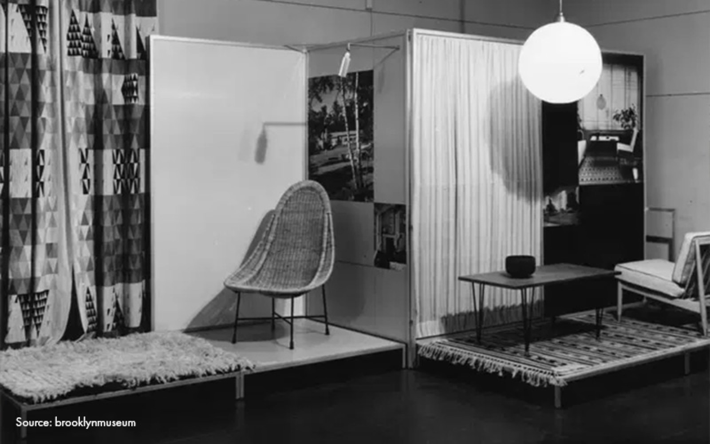
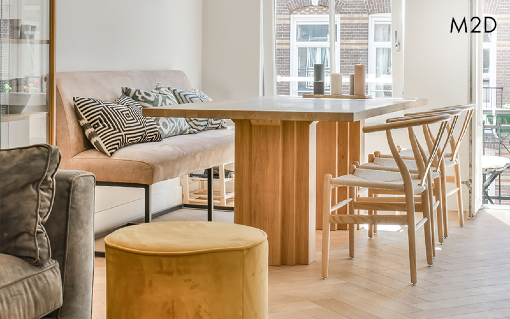

Part 1: Introduction

Scandinavian interior design has become a favourite amongst HDB homeowners in Singapore, and it is easy to see why. Known for its clean lines, practical layout, and inviting atmosphere, this Nordic style is perfectly suited to compact city homes. It transforms even the most modest HDB flat into a space that feels open and calm. A key component of a Scandinavian interior design for HDBs is a colour palette that shapes the mood and feel of each room.
Whether you are working with a 3-room flat or a larger layout, choosing the right colours can make a big difference. The Scandinavian colour palette for small spaces typically includes a mix of cool neutral tones for HDBs, such as whites, soft greys, and pale blues, balanced with earthy hues for cosy interiors like taupe, olive, and terracotta. Together, these tones create a home that feels both serene and full of character.
In this article, we will explore how different colour palettes bring out the best in Scandinavian interior design for HDBs. From crisp, airy whites to warm, nature-inspired accents, you will discover HDB interior design ideas that suit your vision whilst staying true to the principles of minimalist Scandinavian home decor.
Part 2: Overview of Scandinavian Interior Design

2.1 What Is Scandinavian Interior Design?
At its core, Scandinavian interior design is about striking a balance between form and function; beauty and practicality; warmth and simplicity. Originating from the Nordic region, it reflects a way of living that values calm, clarity, and comfort. This makes it especially appealing in urban settings like Singapore, where space is limited, and strategic design can dramatically improve the quality of day-to-day living.
A defining concept behind this style is hygge, a Danish term that roughly translates to “cosy togetherness.” It is not just about soft blankets and candlelight, but about creating an atmosphere that feels safe, relaxed, and intentional. In practice, this means spaces that are meticulously curated, clutter-free, and infused with warmth through colours, textures, and lighting.
In Scandinavian interior design for HDBs, this translates into layouts that are open and airy, colour schemes that are light and calming, and furnishings that are both stylish and functional. You will often find soft rugs underfoot, pale wood finishes, and carefully placed accessories that serve both a practical and decorative purpose.
The emphasis on function also means interior design and renovation choices are made with daily use in mind. Think of multi-use furniture, hidden storage, and natural elements that breathe life into small spaces. The use of natural materials in Nordic design, such as oak, linen, rattan, and cotton—adds warmth and texture while connecting the indoors to nature.
If you are looking to create a serene and spacious sanctuary, Scandinavian interior design for HDBs offers a lifestyle that is both stylish and sensible—perfect for modern Singaporean homes.
2.2 How Did Scandinavian Interior Design Begin?
Understanding the roots of Scandinavian interior design helps us appreciate why it works so well in today’s homes, especially in compact city flats like Singapore’s HDBs. The movement began as a response to social and economic changes in the early 20th century, when Nordic countries sought to make quality design more accessible to ordinary people. This democratic approach to design, focused on simplicity, affordability, and utility, still defines Scandinavian interior design for HDBs today.
The international spotlight first turned to the Nordic region in 1954, when a travelling exhibition titled “Scandinavian Design” toured the United States and Canada. The goal was to showcase the region’s unique design identity: modern, minimal, and deeply rooted in craftsmanship. At the same time, early Scandinavian architecture transitioned from borrowing Gothic and Baroque influences to developing a clean-lined, nature-inspired aesthetic—perfect for compact and efficient living.
In the 1920s, the Swedish Grace movement emerged. It complemented classical forms with local traditions, creating spaces that felt timeless yet refined. A notable example is Stockholm City Hall, completed in 1923, with its structured forms and subtle ornamentation.
By the 1930s, Nordic countries embraced Functionalism, or Funkis, which prioritised practicality, equality, and affordability. Soft, muted tones like white, grey, and pale blue dominated interiors, forming the foundation of the Scandinavian colour palette for small spaces.
These design values remain highly relevant today. In fact, they shape how Scandinavian interior design for HDBs meets the needs of Singapore homeowners—combining beauty and efficiency in a way that is both timeless and accessible.
2.3 Why It Works for HDB Homes in Singapore
Singapore’s tropical climate and compact flat sizes make Scandinavian interior design for HDBs not just stylish, but also practical.
Adapts Well to Humid Climates
One of the reasons Scandinavian interior design for HDBs thrives in Singapore is its natural compatibility with our tropical climate. Nordic interiors favour breathable, light materials such as linen, cotton, and light-toned woods like oak and birch. These natural materials in Nordic design do more than offer aesthetic charm; they also help maintain airflow and reduce heat retention. Combined with proper ventilation and soft window treatments, they create interiors that feel cool, fresh, and comfortable despite Singapore’s high humidity. Indoor greenery, often used in Scandinavian styling, adds a refreshing touch and supports better indoor air quality.
Optimised for Compact Spaces
Scandinavian homes are often designed with limited square footage in mind, making them a perfect fit for Singapore’s smaller flats. From 3-room HDB interior design layouts to larger units, the focus on functionality and spatial efficiency is key. Smart storage solutions, multipurpose furniture, and open-plan layouts help reduce clutter and maximise living space. Pale colours and mirrors also reflect light, making small homes feel more open. This minimalist approach fits right into the clean, tidy lifestyle many Singaporeans prefer, reinforcing the appeal of minimalist Scandinavian home decor.
Local Fusion Possibilities
Singaporeans can easily blend Nordic style with local preferences. For example, homeowners can add vertical herb gardens or incorporate rattan and bamboo, subtly referencing Southeast Asian design. A popular trend is Japandi, a fusion of Japanese and Scandinavian styles, which pairs well with Scandinavian interior design for HDBs. These combinations enhance the home’s character while retaining the clean, calming aesthetic of the original style.
Part 3: Incorporating Scandinavian Colours in Singapore HDBs

3.1 Why Colour Matters in Scandinavian Design
In Scandinavian interior design for HDBs, colour is more than a backdrop; it plays a vital role in shaping how a space feels and functions. A carefully selected colour scheme can make even a small HDB flat feel more open, calming, and cohesive. For Singaporean homeowners working with limited space and natural light, the right hues can completely transform their living environment.
Maximises Natural Light
Scandinavian design often features pale tones that bounce light around a room, making compact HDB units appear brighter and more spacious. Using cool neutral tones for HDBs like white, light grey, and soft beige enhances this effect.
Enhances Hygge
Warm, gentle colours help foster a sense of hygge—comfort, calm, and cosiness. This is especially useful in bedrooms or living rooms where relaxation is key.
Brings Nature Indoors
Muted greens, sandy browns, and other earthy hues for cosy interiors reflect the outdoors, a core principle of many Nordic designs.
Allows Versatility
A neutral foundation gives you flexibility to update your decor without a full overhaul—ideal for Scandinavian-inspired HDB renovation projects.
Promotes Well-being
Incorporating soothing tones supports mental clarity and relaxation, helping to create a sanctuary at home. In short, colour is essential to making Scandinavian interior design for HDBs truly work.
For Singapore homes, the right colour choices make a visible difference. Light tones reflect sunlight better, which is ideal for flats that lack abundant daylight. At the same time, subtle warm tones help balance the clinical feel of all-white spaces.
3.2 What Are the Classic Scandinavian Colours?
Choosing the right colours is crucial in Scandinavian interior design for HDBs. Classic Nordic hues are light, muted, and timeless—ideal for small Singapore flats where space and natural light are limited. These colours help create the calm, functional feel that defines minimalist Scandinavian home decor.
Cool Whites & Off-Whites
These are the backbone of many Scandinavian interiors. Ideal for brightening up compact flats, they reflect light and make rooms feel open. White also pairs effortlessly with natural materials like light wood and rattan. In HDB interior design, matte finishes offer a modern softness, while a touch of gloss can make dimly lit spaces feel livelier.
Soft Greys
Greys add subtle contrast without overpowering the space. They are great for built-ins, walls, or even floor tiles. This neutral tone works well alongside both cool and warm textures, making it a flexible option in Scandinavian interior design for HDBs.
Pale Blues & Sage Greens
These gentle hues introduce a hint of colour whilst maintaining the calmness of the space. They reflect nature and promote relaxation, ideal for bedrooms or reading corners. Their subdued quality fits seamlessly within a small space, breathing life into it without cluttering its surroundings.
3.3 Which Earthy Tones Create a Modern Twist?
While the classic palette of whites and greys forms the foundation of Scandinavian interior design for HDBs, adding earthy hues for cosy interiors introduces a modern and personal touch. These colours maintain the calm, grounded feel of Nordic style whilst giving your space more warmth and depth.
Beige, Taupe & Warm Greys
These softer alternatives to white work beautifully in living rooms and bedrooms, creating a cosy, welcoming vibe. They also pair well with natural materials such as linen, rattan, and light wood, which are commonly found in Singapore homes. These shades are especially suitable for 3-room HDB interior design, where every colour choice needs to enhance spaciousness and comfort.
Terracotta & Burnt Orange Accents
These colours add vibrancy and warmth to neutral schemes. Used in moderation—on cushions, vases, or even an accent wall—they bring energy to a room while keeping within the bounds of minimalist Scandinavian home decor.
Muted Mustard & Olive
Earthy greens and yellows bring in a natural, organic feel that works well in dining or common areas. In Scandinavian interior design for HDBs, these tones offer a subtle pop of colour without overwhelming the space. They fit perfectly into a Scandinavian colour palette for small spaces, balancing charm with tranquillity.
3.4 How to Tie It All Together
Integrating colour effectively is essential to creating a cohesive look in Scandinavian interior design for HDBs. Once you have selected your base palette, be it cool neutrals or earthy accents, these simple styling strategies can help you pull the entire space together beautifully.
1. Layer natural textures to enhance your colour palette
Colour alone does not define a room. Texture adds dimension and depth, especially when working with a muted colour scheme. In Scandinavian interior design for HDBs, combining light wood furniture, soft wool or jute rugs, and linen curtains can make your chosen colours feel more dynamic. These natural materials help soften hard edges and add warmth to minimalist interiors.
2. Choose accessories that are minimal yet intentional
Stick to clean-lined decor with a purpose. Think ceramic vases, framed abstract prints, or leafy indoor plants. These subtle elements elevate your space without overwhelming it, keeping with the principles of minimalist Scandinavian home decor.
3. Opt for practical paint finishes
Singapore’s humid climate means that choosing the right paint matters. Go for washable, moisture-resistant finishes, especially in high-traffic areas like the kitchen or bathroom. This keeps your home interior design looking fresh amidst the tropical heat.
Following these tips can help ensure that your home feels balanced, liveable, and personal.
FAQs
1. Are Scandinavian colour palettes suitable for all HDB flat sizes?
Yes. In fact, Scandinavian interior design for HDBs is especially effective in smaller flats like 3-room units. Light, neutral tones expand the space visually and keep it from feeling cramped.
2. Will white walls make my HDB flat look too sterile?
Not if styled thoughtfully. Use natural materials like light wood furniture, soft textiles, and warm lighting to soften the look and avoid a cold or clinical vibe.
3. Can I mix cool and warm tones in a Scandinavian HDB interior?
Absolutely. The key is finding the right balance. For instance, you may consider using white walls with oak flooring and burnt orange cushions. This keeps the space lively without straying from the Scandinavian theme.